EXPERIENCES

Assistante chef de projet Fidélisation et Expérience Client
APRIL Santé Prévoyance
Septembre-Août 2018
Mes missions :
- Dispositif d'écoute
- Gestion des campagnes, (déploiement d'une quinzaines de campagnes)
- Analyses des verbatim et présentations des KPI, détections des irritants
Mise en place d'actions en collaboration avec les managers
- Travail quotidien sur des outils d'emailing
Pilotage dispositif d'écoute
- Optimisation de l'orientation client : Etat des lieux/benchmark concurrentiel/Referencement GOOGLE/Création
parcours utilisateurs pour préconisations sur l'optimisation de l'expérience consommateur pour
contacter APRIL
- Promotion de l'espace assuré, communication push à des moments de vie clés
- Optimisation du contenus + architecture du site April.fr
- Optimisation outil CRM (cahier des charges, recettage, formation)
- Plan de communication à la suite d'un nouveau produit : Processus/challenges commerciaux/ suivis des performances à l'aide de reporting
Projets Experience client
- Participation création de la semaine de la satisfaction client (700 collaborateurs)
- Participation à l'animation de la communauté de collaborateur et évènements internes
- Newsletters sur les partenariats APRIL
Evénementiel/animation
Chargé de Marketing Fidélisation et expérience client
APRIL Santé Prévoyance
Septembre-Août 2018
Mes missions :
- Management opérationnel des plateaux téléphoniques offshores
- Réalisation d'études marketing pour élaboration feuille de route marché (typologie distributeurs + segmentation)
- Lancement campagnes e-mailings multi-équipement de portefeuille
- Réalisation script vidéo lancement projet "rétention"

Assistante publicitaire juniore
Groupe SEB
Septembre-Août 2018
Mes missions
- Réalisation de Brief pour le nouveau site Rowenta
- Relation agence-entreprise
- Benchmark des concurrents
- Analyse et veille des contenus sur les réseaux sociaux